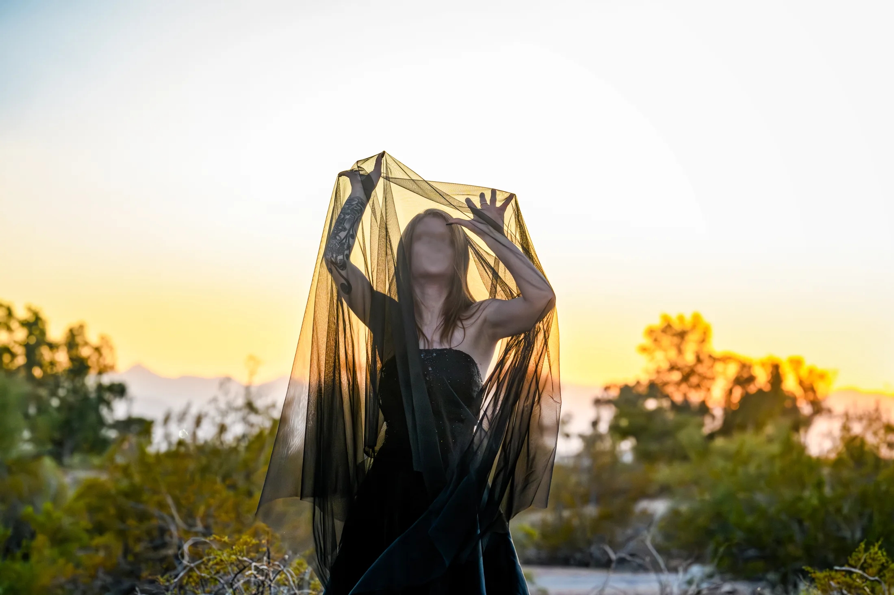
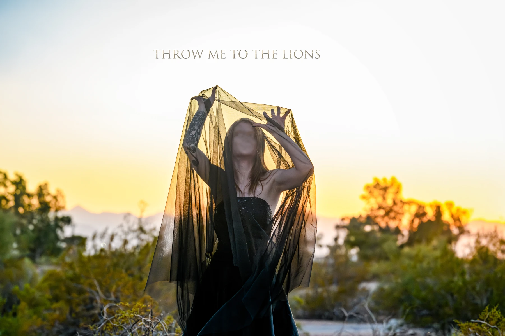
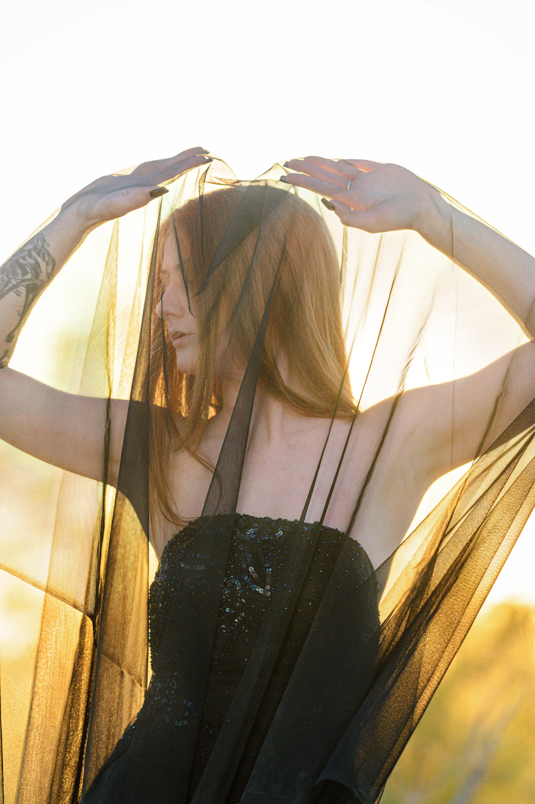
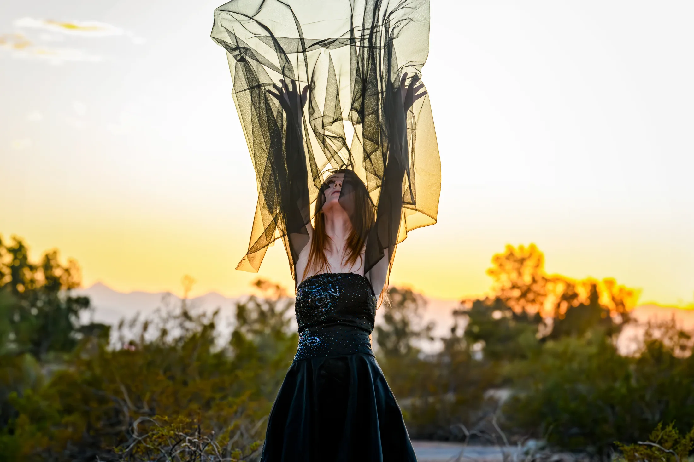
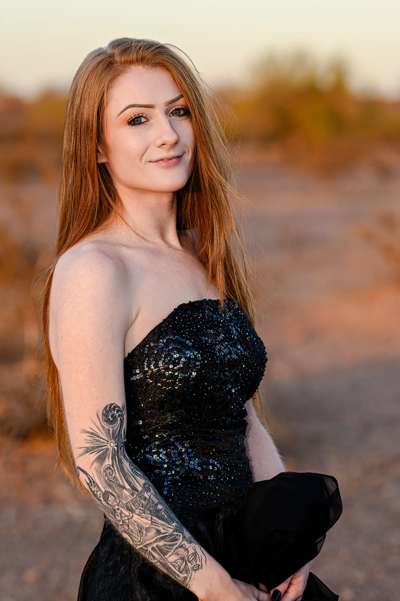

Ava Penelope
010:00 / 0:45

Sound / Image / Continuity
Throw Me to the Lions

Enter through sound
Selected excerpts from a record taking shape.
Select a recording to listen.
The story behind the record ↓Throw Me to the Lions

For nearly thirty years, the music behind Throw Me to the Lions remained private, with no official releases. The Cost of Continuity begins to bring that long practice into public view, combining electronic music and photography around the cost of appearing normal while living with internal unrest.
The project explores the distance between how someone looks and what they experience. Illness, interrupted thought, and shifting emotional states can be difficult to recognize from the outside. Maintaining a composed appearance can carry a considerable physical and psychological cost.
That tension shapes the music. Glitches suggest thoughts catching, delaying, or breaking down under pressure. High frequencies express anxiety, while the low end carries a more romanticized weight of depression and changes in mood. These sound sculptures give the record a language for experiences that often resist a straightforward explanation.
The photography approaches the same subject through the veil. It conceals parts of the face without making the person disappear. Held, lifted, or stretched against the light, it also becomes a physical part of the composition—changing what is visible and how closely we have to look.
The photographs remain warm and beautiful. That matters to a project in which happiness and difficulty can coexist. A composed face need not tell the whole story; its expression can still be sincere. Likewise, the music leaves room for warmth and melody alongside disruption.
Still taking shape, The Cost of Continuity brings these forms into a shared body of work. The photographs invite us to look; the music asks us to consider how much might remain unseen.

03 / Visual studies
01 / 08Model & creative vision
Ashley had the idea for this shoot, and it resonated with me so much that it became the thesis of this record. Without her vision, this record would not be nearly as cohesive and seamless as I hope it will be when it’s finished.
She is as talented as she is beautiful, and deserves a lot of credit for helping me shape this release.

Select a film to watch.
This film could not load. Open the video directly ↗
This film could not load. Open the video directly ↗